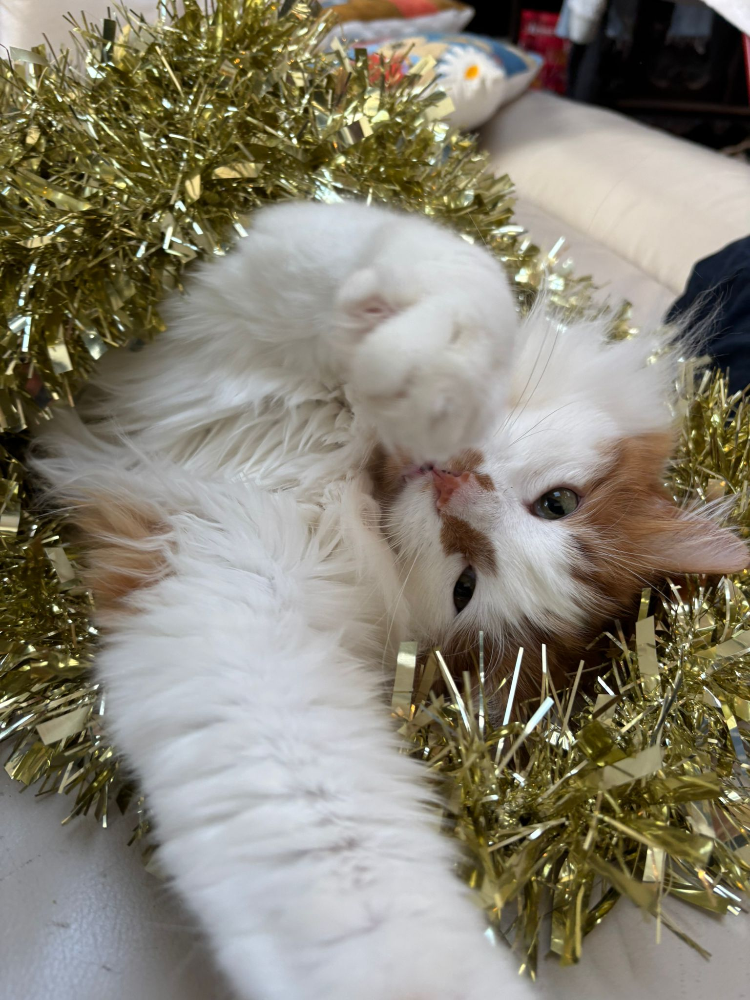

Christmas Joy
Christmas is a wonderful time in my household. The humans bring home a giant fluffy tree that's no doubt meant as a toy for my siblings and I. Everyone gathers around the tree and decorates it with even more toys! They put baubles, tinsel, and lights all over the tree, which I make sure to offer my help with.

Once the three is finishes, the real fun begins. The ornaments dangle and the lights sparkle, but my favourite is the gold tinsel, so I make it my responsibility to pull as much of it off as possible. The branches seem to call to me to parkour around at random times which leaves a big mess on the floor, but at least I'm having the time of my life!
Then there are lots and lots of presents, all wrapped up in colourful paper that makes a crinkling sound when I play with it. The humans clearly thought a lot about how to make Christmas a special and fun time for us cats. Of course, I do quality checks on the presents, by sniffing, pawing, and sitting on them.
It gets even better once Christmas day comes. Everyone gets special meals, far more extravagant than the usual. I must say myself that it was all possible due to my helping paw. I constantly watched over the cooking and carried out countless sniff tests to ensure everything was perfect.
After dinner, we all cuddle up front of the fire and open gifts. This year, I got a mousey toy, a new ribbon to chase, and some catnip (everyone needs to unwind sometimes).
By the end of the night, the floor is covered in torn wrapping paper, the humans are giggly from their special juice, and the tree is much less upright than it was before. I find myself quite tired by this stage, so I curl up and enjoy a well deserved nap, until the humans are fast asleep and the tree starts whispering to me again!